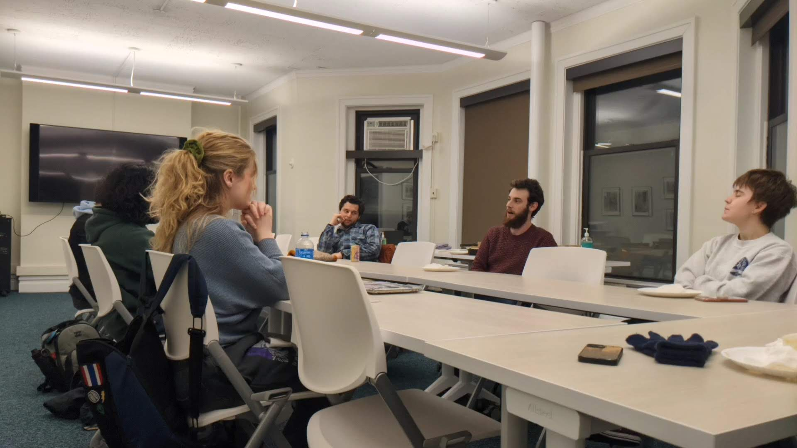
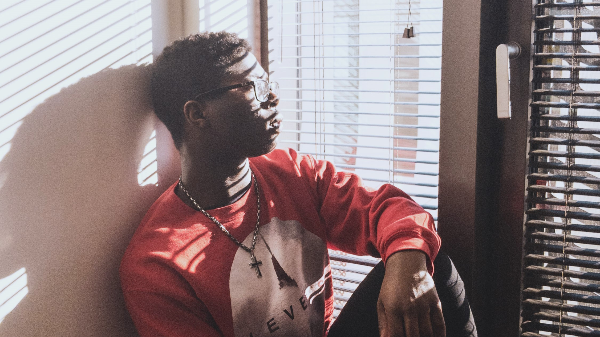

About Me
Hey there! My name is Emmanuel Adewale, but most of my friends call me "Manny" for short, and I'm a third-year student at
The University of Chicago. I am currently majoring in Cognitive Science, but the areas of computer science, visual arts,
psychology, and music are also areas of interest for me. As a personal mission, I desire to share myself with others and reach out to them through creative outlets.
In doing so, I hope to inspire and motivate them. Many of my interests and pastimes are focused around creativity and connection: I've started learning to
make beats/produce music as well as learn about photography and making videos. I've also spent time learning about coding and building websites (still very much so
a work in progress). Making videos on YouTube about music, my experiences as a college student, technology, and my own thoughts about life is quite enjoyable as well.
I also spend time writing my own pieces on Medium about various perspectives I have on life. Although I am still imagining what my future career path could look like, I
know one thing for certain: wherever we find ourselves, we have a moral duty to leave a positive impact on those spaces and the people we encounter in them.
I hope to build a career where I can positively impact others with my work, especially in a creative way. I believe that creativity can help us to connect with others,
to build community with them, and push for positive, lasting change. Whether it's a piece of writing, or a picture that tells a thousand words, I hope to use my
creativity to be a catalyst for positive change wherever I go.
Skills, Knowledge, and Experience
Here are some of the programming languages, tools, and software I have some experience or familiarity with, as well as some that
I am currently learning.
- HTML & CSS
- Python
- Microsoft Word, PowerPoint
- Google Workspace (specifically Gmail, Google Drive, Google Docs, Slides, and Forms)
- DaVinci Resolve (video editing software)
- Canva (graphic design platform)
- Ableton Live (digital audio workstation)
Alongside these languages and software, I am well versed in using several social media platforms such as Facebook, Instagram, and Twitter.
I am also familiar with using Medium to write pieces.
Computer Science Summer Institute
I participated in Google's
Computer Science Summer Institute in July of 2019, a
three week program where a group of students learn about several programming languages and tools, including HTML, CSS, JavaScript, Python, and Google AppEngine. The lessons over the first two
weeks culminate in the final project during the third week, where students form groups to design web apps to solve certain problems and add more efficiency to people's lives.
My team's project used QR codes to create a modular solution for organizing boxes and inventory and making the moving process easier.
Active Minds (University of Chicago Chapter)
During my first year at The University of Chicago, I joined my school's chapter of
Active Minds, the nation's leading non-profit organization dedicated to
raising awareness about mental health in high schools and colleges across the country, as well as educating young adults and those around them about
mental health. I helped to start a new
Instagram page for our school's chapter, which gained over 50 followers within 3 months. I designed many
Instagram posts for the page, as well as several posts for Active Minds' Spirit Week 2020. I also helped to organize See Through Stigma Week, an annual week
of programming focused on combating the stigma around mental illness and physical/mental disability, in collaboration with another RSO on campus,
Students for Disability Justice.
Aspen Young Leaders Fellowship (AYLF)
From December of 2020 to October of 2021, I was blessed with the privilege to be a member of the St. Louis cohort of the Aspen Young Leaders Fellowship, or
AYLF for short. During my time
in the cohort, I attended monthly sessions centered around understanding and developing a frame of mind for leaderhship and community change, and these sessions
culminated in the development of our local community impact project called Generational Tales, centered around bridging the generational gap in the Greater St.
Louis area through mentorship, storytelling, and empathetic conversation.
My Work

College Editorial Team
I wrote a featured piece on Future Café,
a student-organized discussion series based on
imagining utopian possibilites and long-term futures.

GitHub
Here is my GitHub page, where
you can find some of the projects I've worked on or been
a part of.

Medium
In my spare time, I write personal pieces
on Medium, an online publishing platform where anyone can share their thoughts.

Photography
I dabble in photography and
video; you can find some of the pictures I've taken and
videos I've made there.

Other Creative Work
If you'd like to see some of the other things I've
made or worked on, here is a Drive folder of other projects I've put time into!
If you want to see more details about my experience, check out my resume!